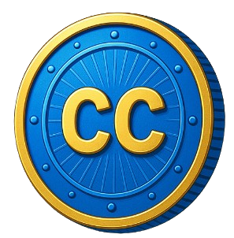

Elemental Conquest – Web3 Battle Royale Kỹ Năng Cốt Lõi
1. Giới thiệu tổng quan
Trong một vũ trụ được khai sinh từ vụ nổ Big Bang, 5 luồng sáng đại diện cho Ngũ Hành (Kim – Mộc – Thủy – Hỏa – Thổ) đã phân tách, tạo nên các chiều không gian khác biệt. Giữa thời kỳ hỗn loạn, chiến tranh hoang lạc bùng nổ khi các chiều không gian va chạm, các thực thể cổ xưa xuất hiện để tranh giành 5 viên đá Ngũ Hành huyền thoại – nguồn sức mạnh vô song có thể định đoạt vận mệnh vũ trụ. Người chơi sẽ vào vai các anh hùng của thế giới, chọn theo phe thiện hoặc ác, lao vào đấu trường sinh tử nhằm giành lấy quyền lực tối cao.
2. Gameplay chính
- Thể loại: Battle Royale – 100 người chơi, vòng bo, loot đồ, sinh tồn.
- Chế độ chơi:
- Solo / Đội (2–5 người)
- Đấu thường / Xếp hạng (chỉ PvP)
- + PvE: Dành cho người chơi mới hoặc chưa đủ điều kiện vào PvP. Có thể chơi solo/team, chiến đấu với quái và boss theo map.
- + PvP Đấu hạng: Mở khóa khi người chơi đạt cấp độ nhất định và hoàn thành thử thách PvE.
- Map: Có map PvE riêng và map PvP chuyên biệt.
- Hệ thống xếp hạng:
- Top1: +50đ | Top2: +40đ | Top3: +30đ | Top4: +25đ | Top5: +20đ
- Top6: +10đ | Top7: +5đ | Top8–10: Không trừ điểm
- Top11–100: Bị trừ điểm, càng thấp trừ càng nhiều (Top 50: -5, Top 80: -15, Top 100: -1 rank)
3. Hành trình người chơi
- Tạo tài khoản + ví Web3 tích hợp (Metamask, WalletConnect).
- Tạo nhân vật → Chọn hệ Ngũ Hành.
- Tham gia chế độ PvE để làm quen và lên cấp.
- - Nhiệm vụ ngày/tuần (tiêu diệt boss, vượt map).
- - Nhận $CC token, nguyên liệu chế tạo NFT.
- Hoàn thành thử thách để mở khóa PvP xếp hạng.
- Đấu PvP để tích điểm, nhận phần thưởng $CUP + vật phẩm đặc biệt.
- Dùng $CUP để craft NFT hoặc stake nhận phần thưởng.
- Tham gia DAO để góp ý cập nhật, sự kiện.
4. Hệ thống Ngũ Hành & Class
- Khi tạo nhân vật, người chơi chọn 1 trong 5 dòng máu Ngũ Hành (Kim, Mộc, Thủy, Hỏa, Thổ).
- Mỗi hệ có ưu/nhược điểm khác nhau và có hệ thống khắc chế vòng tròn.
- Tổ đội đủ 5 hệ sẽ kích hoạt 'Ngũ Hành Trận'.
- Loot đặc biệt: Đá Ngũ Hành dùng để kích hoạt tuyệt kỹ một lần trong trận.
5. Vũ khí & Vật phẩm
- Chủ yếu là vũ khí cận chiến: Kiếm, dao, rìu, thương, nỏ, cung, găng tay, giày bay, cánh thiên thần...
- Vũ khí tầm xa hiện đại (súng) rất hiếm, chỉ có trong “ánh sáng ân huệ giáng từ trên trời xuống”.(Drop ngẫu nhiên vị trí trên map khi số lượng người chơi còn 30/100)
- Game nhấn mạnh yếu tố kỹ năng, không có skin tăng sát thương.
6. Tokenomics & NFT
- Token chính: $CUP – dùng để mua các vật phẩm NFT có hiệu ứng đẹp, giá trị cao (skin đặc biệt).
- Token phụ: $CC – dùng để mua các skin thông thường, không có hiệu ứng.
- Mỗi giao dịch NFT bằng $CUP sẽ đốt 2% token nhằm giảm lạm phát và tăng giá trị.
$CUP

$CC

7. Crafting NFT bằng $CUP
- Kết hợp $CUP + nguyên liệu từ PvE/PvP để chế tạo NFT vũ khí, skin, hiệu ứng.
- NFT có thể giao dịch, sử dụng trong game hoặc burn để nâng cấp NFT khác.
- Cơ chế crafting gồm: chọn loại vật phẩm → thêm nguyên liệu → xác suất thành công.
8. PvE chế độ mới
- Thể loại: Đánh quái, vượt ải, tiêu diệt boss.
- Mục tiêu:
- + Cung cấp trải nghiệm nhập môn.
- + Trao thưởng nguyên liệu chế NFT, token $CC.
- + Là 'bước đệm' trước khi vào đấu hạng.
- Thành tựu mở khóa PvP:
- + Cấp độ tối thiểu: 10.
- + Vượt 3 ải PvE boss + hoàn thành 5 nhiệm vụ tuần.
9. DAO cộng đồng
- Chủ sở hữu $CUP có quyền tham gia quản trị game thông qua DAO:
- bình chọn nội dung mới, quyết định cập nhật, sự kiện.
10. Biện pháp chống hack
- Giao dịch bằng ví phi tập trung (Metamask, WalletConnect).
- Hash trạng thái client gửi về server phát hiện gian lận.
- Giám sát hành vi bất thường bằng AI:
- + Sử dụng hệ thống Machine Learning để huấn luyện mô hình phân loại hành vi người chơi (bình thường, nghi ngờ, gian lận).
- + Mô hình học từ dữ liệu log hành vi: số lần click, thời gian phản hồi, đường di chuyển, tốc độ di chuyển…
- + Áp dụng các thuật toán như Random Forest, XGBoost hoặc mạng nơ-ron tích chập (CNN) để phân tích dữ liệu theo thời gian thực.
- + Cảnh báo và tự động khóa tài khoản nếu phát hiện hành vi gian lận rõ ràng.
- Tài sản NFT được lưu on-chain để đảm bảo minh bạch.
🛣️ Lộ Trình Phát Triển – Elemental Conquest
- Giai đoạn 1: Tiền sản xuất & Xây dựng nền tảng (Q2 – Q3/2025)
- Hoàn thiện kịch bản, thế giới quan & hệ thống Ngũ Hành.
- Thiết kế concept art, prototype nhân vật, vũ khí, kỹ năng.
- Phát triển MVP (PvE + hệ thống ví Web3 tích hợp).
- Ra mắt website chính thức & mở cộng đồng Discord/Telegram.
- Giai đoạn 2: Phát hành bản Alpha (Q4/2025)
- Mở test PvE cho người chơi sớm (Closed Alpha).
- Hoàn thiện hệ thống loot, nhiệm vụ, token $CC.
- Tích hợp crafting NFT cơ bản & marketplace sơ khai.
- Mở tính năng staking $CUP, whitelist cho NFT Genesis.
- Giai đoạn 3: PvP & Xếp hạng chính thức (Q1/2026)
- Mở chế độ PvP đấu hạng + bản đồ chuyên biệt.
- Kích hoạt hệ thống rank, phần thưởng theo thứ hạng.
- Ra mắt hệ thống “Ngũ Hành Trận” tổ đội.
- Niêm yết token $CUP trên các sàn DEX lớn (Raydium, Uniswap...).
- Giai đoạn 4: DAO & Cộng đồng hóa (Q2/2026)
- Ra mắt DAO quản trị game – bỏ phiếu nội dung, sự kiện.
- Tổ chức giải đấu PvP mùa đầu tiên với giải thưởng lớn.
- Hợp tác KOLs/Web3 guilds mở rộng người chơi toàn cầu.
- Ra mắt mobile version (Android / iOS).
- Giai đoạn 5: Mở rộng vũ trụ (Q3 – Q4/2026)
- Cập nhật class mới & vùng đất nguyên tố bị phong ấn.
- Mở rộng PvE thành chế độ co-op nhiều người, boss thế giới.
- Ra mắt hệ thống pet + NFT companion.
- Xây dựng phiên bản VR/AR trong tương lai.